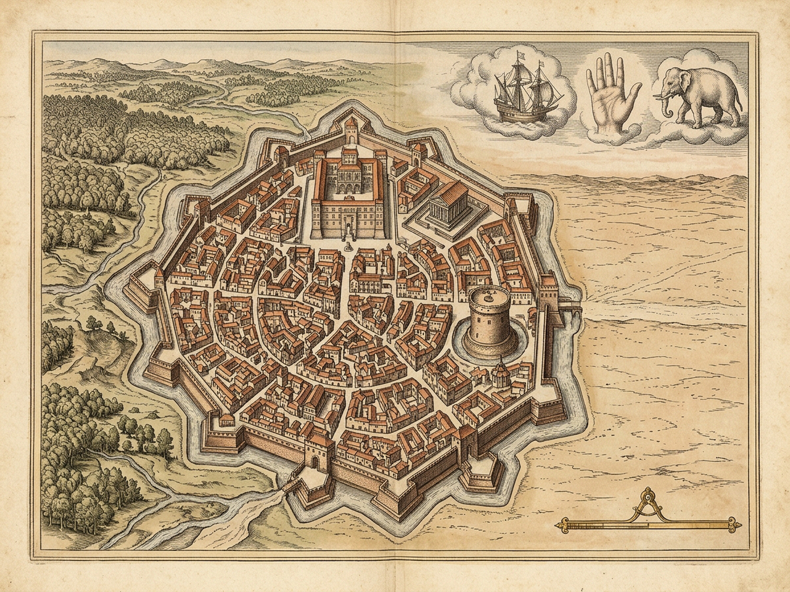

¶ Chapter I · Cities & Signs I · Folio VI
TAMARA
— The Thick Coating of Signs & the Empty Sky
Plates P
Foley: On M
Motion: Full V
Reset RACT IWilderness Verge0/3 SignsACT IIStreet of Jutting Signs1/26 · P0ACT IIIEmpty Horizon & Clouds0/3 CloudsFOLIOMap & City PlateII Plates¶ Approach Among Mute ThingsMute: 0
“You walk for days among trees and among stones. Rarely does the eye light on a thing, and then only when it has recognized that thing as the sign of another thing… All the rest is silent and interchangeable; trees and stones are only what they are.”
¶ Three Natural Signs Before the Gate0 / 3¶ City ThresholdKey S / 2
Recognize Next Sign on Verge [S]
Gate Sealed (Recognize 3 Signs or Press 2)
Street Corridor
Peel Lectern & 26-Index
STATION I · JUTTING SIGNBOARDSIron Pincerspincers -> tooth-drawer's houseDepth 0 · Raw Matter: NONEStratum 0 — Outer Woodcut Facade
Pry / Peel Beneath [E]
Scrape +3 Strata [X]
¶ Complete 26-Sign Index1 / 26 Scanned¶ Outside the Undiscovered CityDwell: 412ms
“However the city may really be, beneath this thick coating of signs, whatever it may contain or conceal, you leave without having discovered it. Outside, the land stretches, empty, to the horizon; the sky opens, with speeding clouds. In the shape that chance and wind give the clouds, you are already intent on recognizing figures: a sailing ship, a hand, an elephant…”
¶ Cloud-Augury Constellations0 / 3¶ Gaze Reticle & ConditioningArrows / C←↑↓→
Crystallize [C]
Diptych View
Ichnographia Map (1600×1200)
Street Canyon Plate (1600×1000)
Map: PNG
Loupe: 1.0× [Z]
Return [Esc]

¶ TABULA ICHNOGRAPHICA · 1600×1200Copperplate Map Matrix PreparedAwaiting Royal Plate Guild impression (map.png / map.svg) charting the West Wilderness Verge, the 5 Precincts of Jutting Signs, and the East Pareidolia Plain.¶ PROSPECTUS URBIS · 1600×1000Tempera & Woodcut Perspective Matrix PreparedAwaiting Royal Plate Guild impression (image.png) depicting the street canyon of pincers, tankard, halberds, scales, shields, decrees, vendor stalls, and distant cloud figures.¶ FOLIO PLATES: I. Ichnographia Tamarae (map.png) · II. Prospectus Viae Signorum (image.png)Drag inside plate well when zoomed (1.75× / 2.5×) · Press Z to cycle engraver's loupeSemiotic Coat: 4%Ledger: 1 Name Recorded · 0 Peels · Raw Matter: 0
“Your gaze scans the streets as if they were written pages: the city says everything you must think, makes you repeat her discourse…”
TAMARA · SIGNUM VI